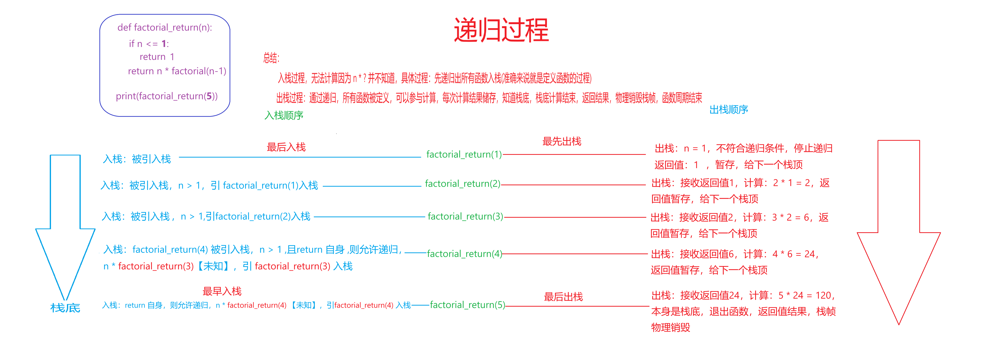
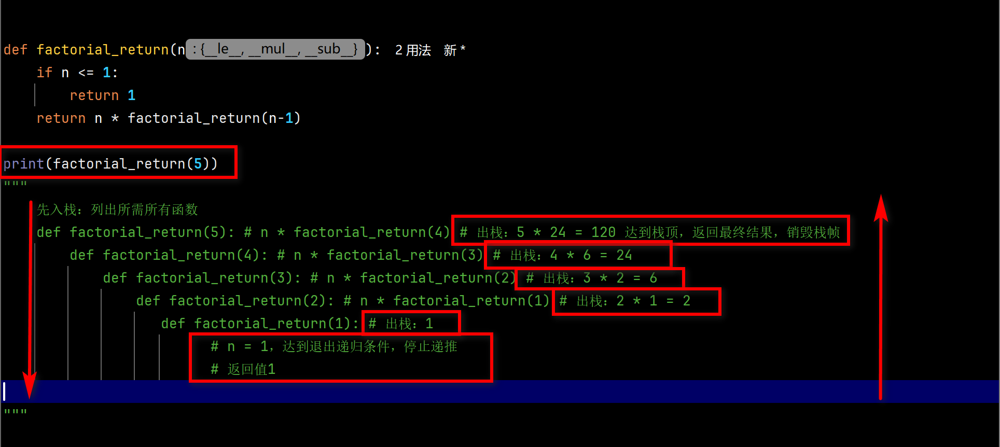

递归
- 递归：就是函数返回值是函数自身
- 与常规函数区别：
return 自身 -
注意事项
- 重点：
return 自身 - 必须写入退出递归的条件：
return 非自身 python默认递归上限：1000次-
def subtract(num):
try:
num = float(num)
print(f"当前 num: {num}")
if num >= 1000:
return subtract(num - 10) # return 自身 递归
elif num >= 500:
return subtract(num - 5) # return 自身 递归
elif num >= 200:
return subtract(num - 3) # return 自身 递归
elif num > 0:
return subtract(num - 1) # return 自身 递归
else:
return num # return 非自身 结束递归
except ValueError:
return "请输入数字类型"
print(subtract(600)) - 递归本身简单，主要是要考虑：递归想干什么，什么情况下结束递归
-
自行总结：递归整个过程(以上案例为主)
- 入栈过程(递推)：无法完成完整计算，因为当前函数需要等待子调用的返回值。这个过程实际上是在“列出所有需要被执行的函数”。
- 出栈过程（回调）：计算从最上层（栈顶，即最内层）开始，逐层向下（向栈底）推进，直到到达栈底（最外层）。
- 栈底计算出最终结果后，按照正常函数的流程返回，并在返回时依次销毁栈帧。
-

-

- 重点：